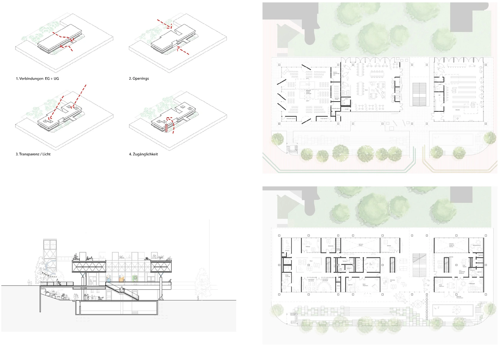
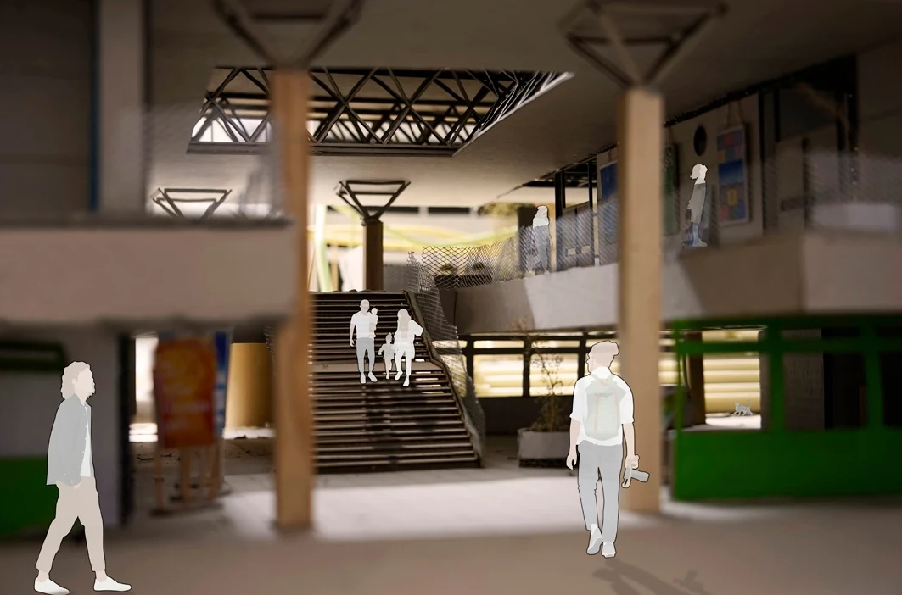

Academic work · Urban design
Raum für Alltag
A reuse proposal for Olympiadorf’s ecumenical church center draws on sessions with residents. A 1:33 model gave the community a way to test new uses together.

- Location
- Olympiadorf, Munich
- Context
- Hochschule München · Urban design studio
- Term
- Summer 2025
The drawing
Selective openings in the existing MERO structure make room for shared uses and new connections.

Enlarge drawingThe space
The landing shows how circulation and everyday gathering could share the same space.
